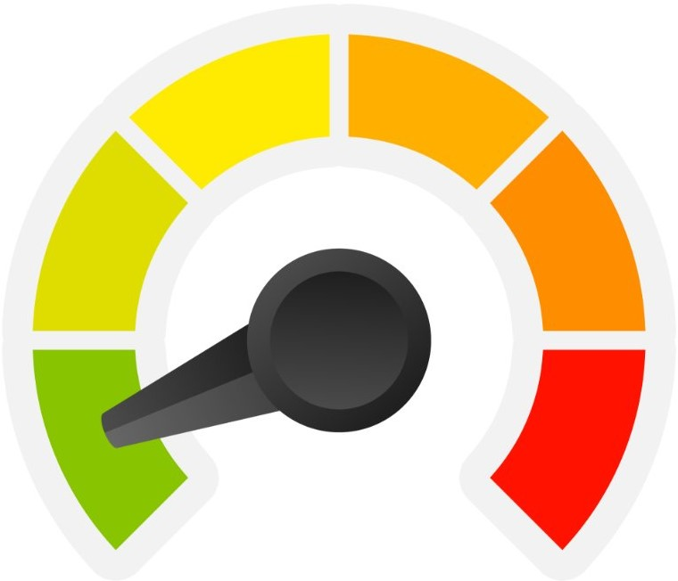
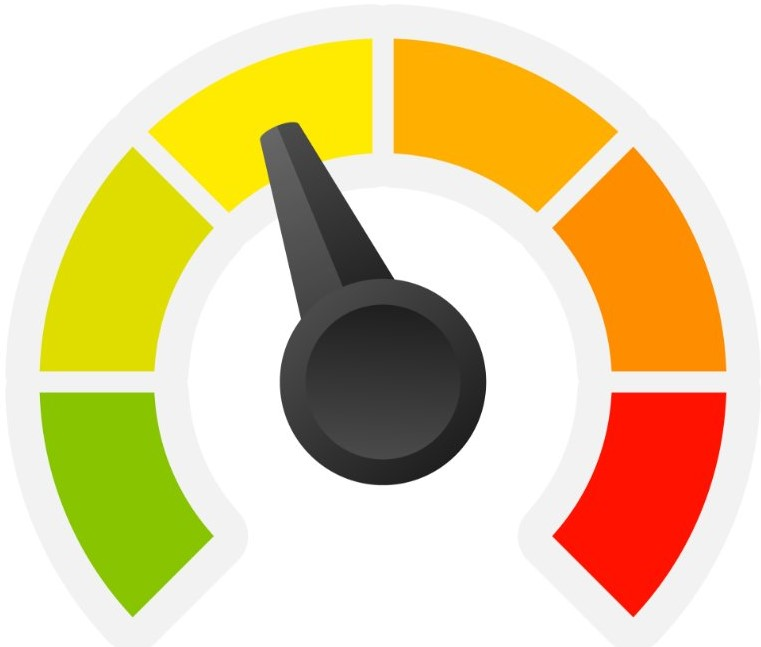
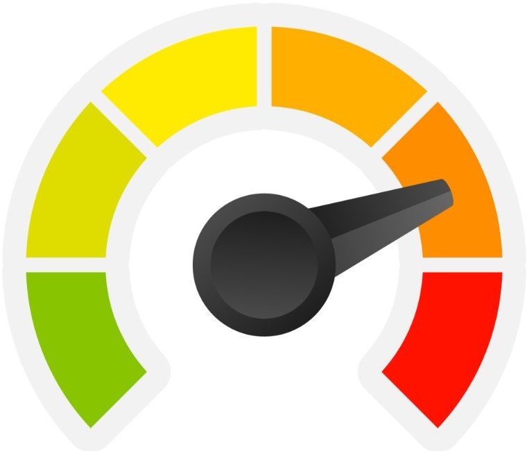
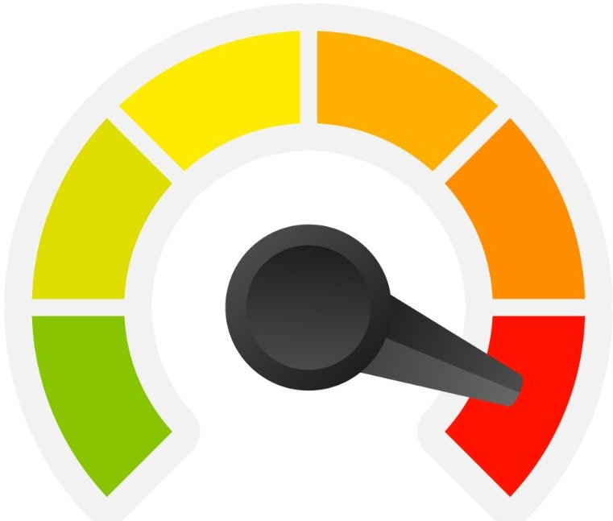

Anxiety Test (Self-Assessment)
Could you be suffering from an anxiety disorder?
Below is a list of questions that relate to life experiences common among people who have been diagnosed with a anxiety disorder. Please read each question
carefully, and indicate how often you have experienced the same or similar challenges in the past few months.
Your privacy is important to us. All results are completely anonymous.
Anxiety test results:
Your score:
Little or No indication of an Anxiety Disorder

Your answers suggest that there is Little or No indication that you have symptoms common among people with an anxiety disorder.
However, this quiz is no substitute for a proper diagnosis from a health care professional and we would encourage you to schedule an appointment
with your doctor or other mental health professional now.
Anxiety test results:
Your score:
Mild indication of an Anxiety Disorder

Your answers suggest that there is Mild indication that you have symptoms common among people with an anxiety disorder.
However, this quiz is no substitute for a proper diagnosis from a health care professional and we would encourage you to schedule an appointment
with your doctor or other mental health professional now.
Anxiety test results:
Your score:
Moderate indication of an Anxiety Disorder

Your answers suggest that there is Moderate indication that you have symptoms common among people with an anxiety disorder.
However, this quiz is no substitute for a proper diagnosis from a health care professional and we would encourage you to schedule an appointment
with your doctor or other mental health professional now.
Anxiety test results:
Your score:
High indication of an Anxiety Disorder

Your answers suggest that there is High indication that you have symptoms common among people with an anxiety disorder.
However, this quiz is no substitute for a proper diagnosis from a health care professional and we would encourage you to schedule an appointment
with your doctor or other mental health professional now.